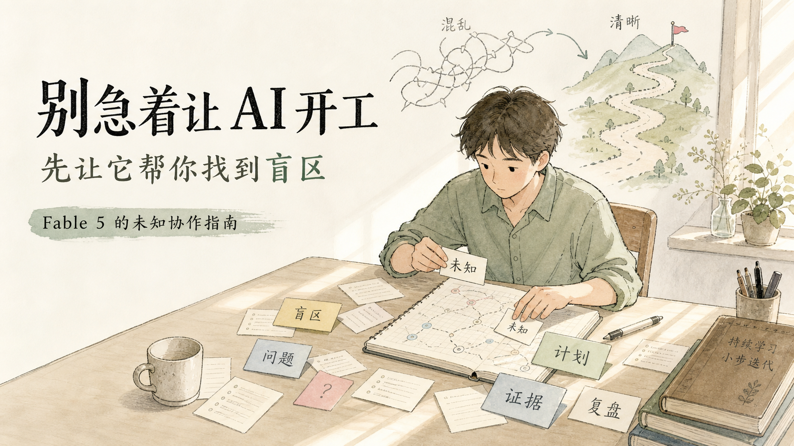
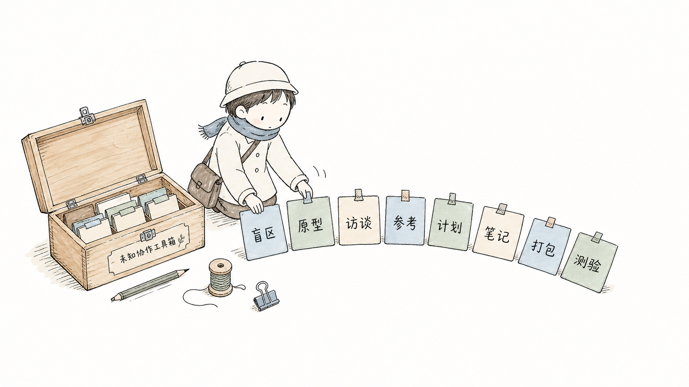

It reduces confident wrongness
The workflow forces the agent to expose unknowns before it writes, edits, publishes, or pushes.
Harness Interview Workflow turns vague intent into a structured interview, route options, approval gates, implementation notes, and verifiable delivery.

The workflow forces the agent to expose unknowns before it writes, edits, publishes, or pushes.
High-risk actions move behind explicit confirmation instead of becoming accidental automation.
Plans, notes, route decisions, verification, and follow-ups become durable workflow material.
The harness flow is mapped as a dark technical diagram: task signals, blindspot scan, interview packets, approval gate, and reusable deliverables.


Use harness-interview-workflow.
Do not execute yet.
First restate my goal, run the blindspot scan, ask only 1-3 key questions, propose routes, and wait for approval.